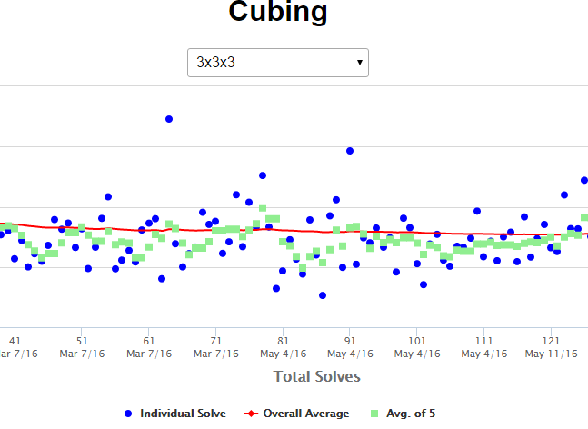

Last updated May 18, 2016
Check out these projects on GitHub.

Technology Stack: JavaScript (Node.js), Mocha for testing
After using promises so much, I wondered how libraries like Q and Bluebird just seemed to work so seamlessly together. Then I discovered the Promises/A+ spec for interoperable promises, and was inspired to write my own compliant library and publish it on NPM. Checkout the source code on GitHub, as well as the API documentation.

Technology Stack: JavaScript, Babel for ES6, Highcharts, Node.js, Cordova
Check out the page at msrose.github.io/cubing, as well as my WCA page.
This page shows logs of all my timed Rubik's cube practicing. It involves a mobile app where I record my times and sync them to DynamoDB via a small REST API, then visualize everything on a web page. It's interesting to me how the averages of five and means of three follow a vaguely sinusoidal pattern.

Technology Stack: Ruby, ERB for templating, CSS
Check out the example schedule.
This started out as a Ruby command line utility reading a JSON file; I gradually implemented UWaterloo Open Data API integration, and finally an actual web client for viewing the generated schedules: msrose.github.io/uw-schedules

Technology Stack: Ruby on Rails, JavaScript (jQuery), Bootstrap, SASS, HAML, RSpec, FactoryGirl, Guard, Spork
Hosted on Heroku - check out my personal Linkadex page.
A dynamic bookmark management application - have a dedicated, customizable page for your links! This project has a full suite of automated tests, as well as a simple API.
Technology Stack: JavaScript
Some cool drag and drop shenanigans with vanilla JS. Try out the randomly generated live demo to the left, or go a little deeper and use the fiddler to play around with all the options. Ready for a blast of colours? Go see a randomly generated extravaganza.

Technology Stack: HTML, CSS, JavaScript (jQuery)
Hosted on Heroku: carmelcubing.herokuapp.com
This is the first website I ever made. It was for a Rubik's cube club I started in high school. I learned lots of CSS doing this - in hindsight the structure of the code is poor (I was a novice), but I'm very pleased with the final product in terms of appearance.